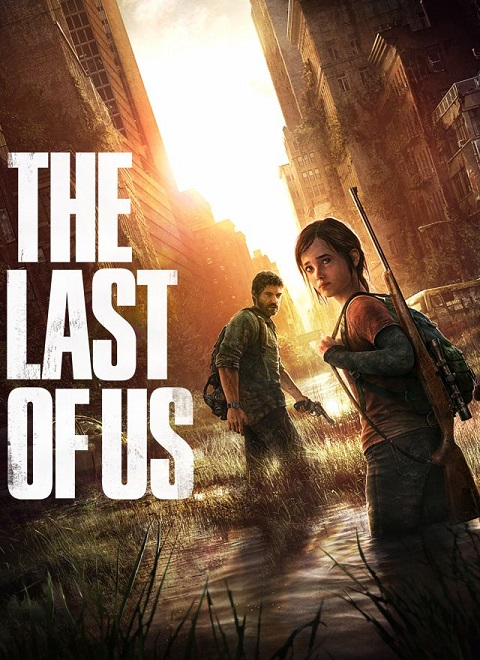
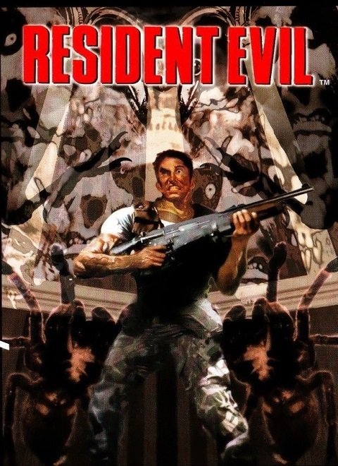
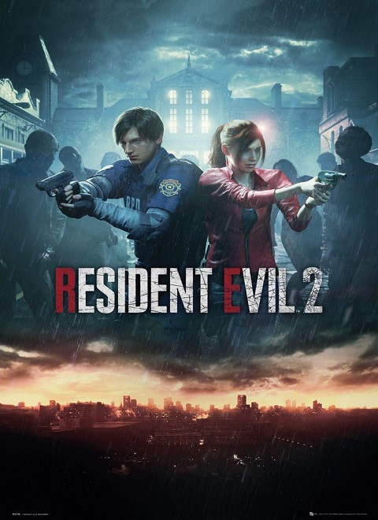

Sinopsis
La trama del juego comienza de la misma forma que su predecesor, con la llegada de Chris, Jill y Wesker a la Mansión Spencer. Ahí ellos no solo se encontrarán con los muertos vivientes de la entrega original, sino que además, estos si no son eliminados completamente, se volverán una amenaza a futuro. En ese lugar, ellos no solamente serán testigos de los experimentos realizados por la empresa más importante de la ciudad, sino que además, serán testigos de las atrocidades cometidas por el dueño de la Mansión, y de una lista de traiciones que llega hasta el propio cuerpo de S.T.A.R.S. y la policía local. Tras ponerse en contacto con Brad, el piloto del helicóptero, los supervivientes lograrán escapar de este lugar, aunque, las pesadillas les acompañaran de por vida.
Trailer
Trama
Todo comenzó el 24 de julio de 1998 en las afueras de Raccoon City, concretamente en el área boscosa que rodea la ciudad, dentro del perímetro de las montañas Arklay. En este lugar, están ocurriendo una serie de extraños asesinatos, con víctimas cuyos restos muestran indicios de canibalismo. El ayuntamiento local envía al equipo Bravo del grupo de élite de la policía de la ciudad, los S.T.A.R.S. (“Special Tactics And Rescue Service” o, “Servicio Especial de Tácticas y Rescate” por su traducción al español) a investigar estos acontecimientos. Tras perderse el contacto con el equipo Bravo, se envía al equipo Alpha para encontrarlos y continuar la investigación. El equipo Alpha localiza el helicóptero del equipo Bravo derribado, sin indicios de supervivientes; excepto por una mano mutilada (en la versión de Nintendo GameCube se encuentra el cadáver del piloto, Kevin Dooley). El mismo se encontraba en muy malas condiciones pero, extrañamente, gran parte del equipo se encontraba dentro del mismo.

El helicóptero del equipo Alpha de S.T.A.R.S. sobrevuela los Bosques de Raccoon

El helicóptero del equipo Alpha de S.T.A.R.S. sobrevuela los Bosques de Raccoon
Mientras ellos buscan nuevas pistas por la zona, tratando de averiguar lo sucedido, el equipo Alpha es atacado por una jauría de cerberus, los cuales asesinan rápidamente a Joseph Frost. Tras esto, el piloto del helicóptero, Brad Vickers, entra en pánico y despega, abandonando al resto de sus compañeros. Estos, viéndose perseguidos y sobrepasados por las horribles criaturas, se ven obligados a buscar refugio, topándose con una Mansión cercana que parece haber sido abandonada.
The Last of Us
Sinopsis
The Last of Us cuenta la historia de un mundo posapocalíptico devastado por una pandemia que convierte a los humanos en criaturas caníbales infectadas por un hongo mutado. Joel, un contrabandista, es contratado para escoltar a Ellie, una adolescente inmune a la infección, a un grupo de científicos que buscan una cura.
VER MASResident Evil
Sinopsis
El grupo STARS se enfrenta a una situación de terror cuando, investigando extraños asesinatos en las afueras de Raccoon City, se ven obligados a refugiarse en una mansión que esconde experimentos secretos de la corporación Umbrella, generando zombis y monstruos.
VER MASResident Evil 2
Sinopsis
sigue a Leon S. Kennedy y Claire Redfield, quienes se ven atrapados en Raccoon City durante un brote de zombis causado por un virus biológico de la corporación Umbrella. Ambos deben escapar de la ciudad y descubrir los secretos de la situación, mientras luchan contra zombis y otras criaturas mutantes.
VER MAS7 Days to Die

Sinopsis
es un videojuego de supervivencia de mundo abierto en un entorno postapocalíptico, donde los jugadores deben sobrevivir a los zombis y los desafíos ambientales. El objetivo principal es sobrevivir cada semana (los "7 días"), utilizando una combinación de recolección de recursos, construcción de bases, creación de objetos y defensa contra las oleadas de zombis.
VER MAS